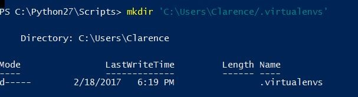

Setting up the virtual machine.
Virtual machines are used make sure all the crazy packages and
libraries you install don't mess with your natural python environment. Install
Python 2.7 First, if you have not already done so.
Congratulations, step one is complete. Now open up command prompt, and go into the
scripts directory of your Python 2.7 location. Type pip install virtualenv then
install the virtual... eh you can read images:
Did that work? Excellent.
Lets go into the Powershell. Right click it and run it as an administrator.
This will allow you to execute scripts from Python:
Now make a folder to put all your virtual environments
into. Here I chose .virtualenvs.

Go ahead and try to Import-Module like below:
Because of some nonsense with Windows not liking long file names, we need to rename the file
VirtualenWrapperTabExpansion.psm1 to VirtualenWrapperTabExpansi.psm1 Next, you will open
VirtualEnvWrapper.psd1 stored in your powershell modules directory and change the NestedModules argument to match
that filename:
Also, change the
VirtualenWrapperTabExpansi.psm1 file's function to $function:TabExpansi to match the file name.
Try to import it again. If all is right in the world, this
will happen:
Which is nothing.
So at this point we're going to add Python scripts to our PATH variable. We probably could of done this
much earlier in the tutorial, but this is when it became relevant for me, and in programming we all know its bad luck sometimes
to do stuff out of order. So we go to Control Panel->System and Security->System->Advanced system settings->Environmental Variables.
Then choose "Path" and add your Python 2.7 scripts directory.
Go back to your PowerShell and start a virtual environment. This image just shows an example, but feel free to name your
environment something different than TestEnv. The environment name in parenthesis preceding
your PS prompt means that you're in it. You can show all the environmental variables to choose from with the command
workon and exit an environment with deactivate.
So finally, you should now have everything you need to install open source Python APIs from Github like a real Linux machine.
Lets do it!
Using the Adapt Parser
The example of the parser's use fom the Mycroft site gives a pretty basic example of its use
once its all setup in Linux or OSX "play some music by the clash". Which returns
a json object with all of your specified categories matched up and confidence level. We however,
went through some gangsta "Adapting" to get up and running. Of course our example needs to be way more cathartic.
You can just use whatever IDE or text editor, but here I'll use PyCharm. So first chose your virtual environment instead of
the usual "Python 2.7" version when you start a project.
Now go into the example code generously provided by Sean Fitzgerald and put that code into your project py file.
Be sure to keep the original author's name and comment that you are building on top of his code.
Now for the music_intent
object, add to the intent builder a "Song" category.
Then we add our song of choice to the list. I used "Tattoo." Note that I later changed the name to the correct
spelling but I'm not going to change my screenshot. Not for free anyway. And since we're next to that code, also
register the song category.
Now we add the file path to our music.
So the coding is done. Just configure the debugger to input an argument, when you run your script.

This is equivalent to at the command prompt myProgramName.py "Please play a song about a Tattoo"
Now just run your program.

There's our JSON and there's Ms. Sparks. Now everyone sing-along, "No matter what you say about love..."